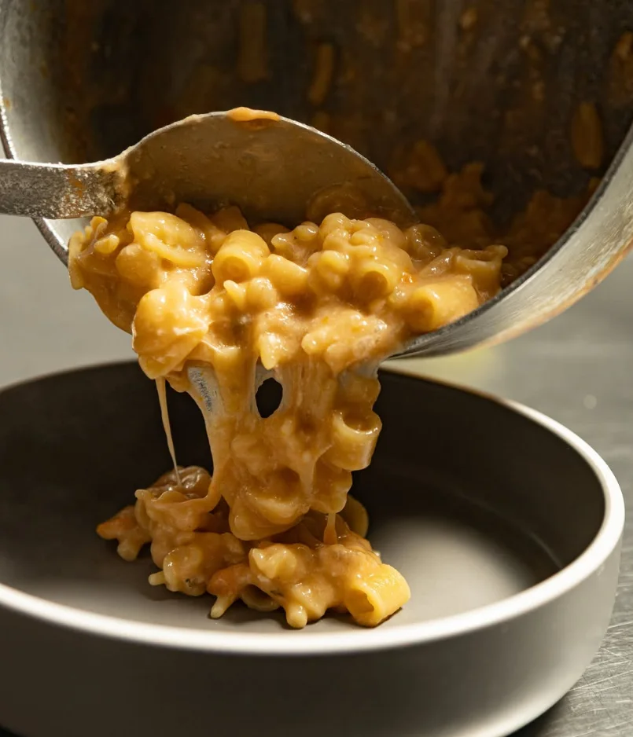
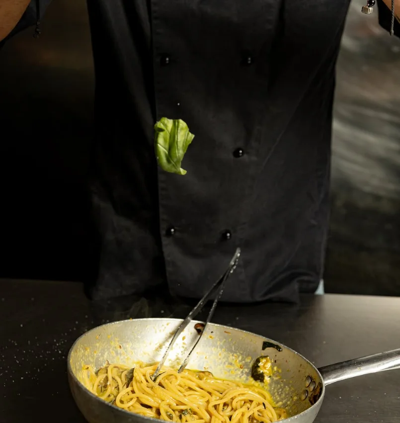
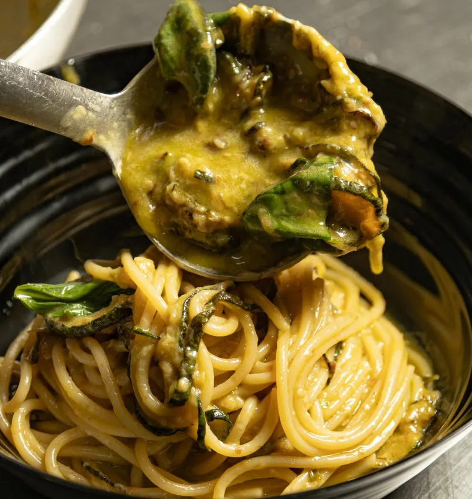
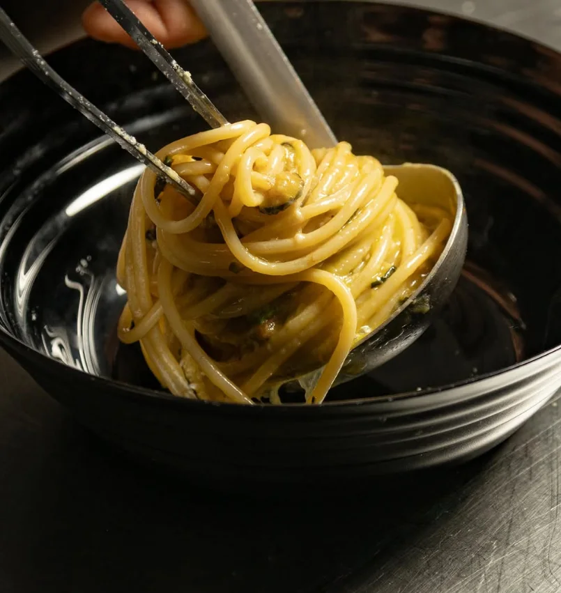
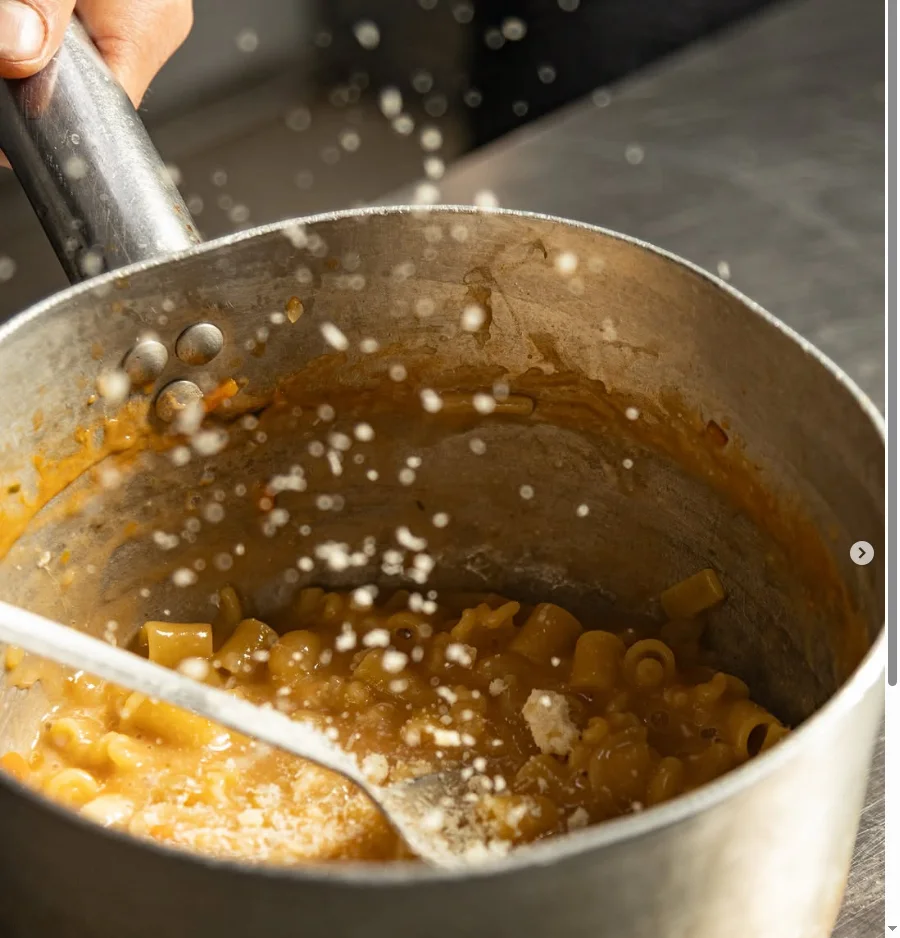
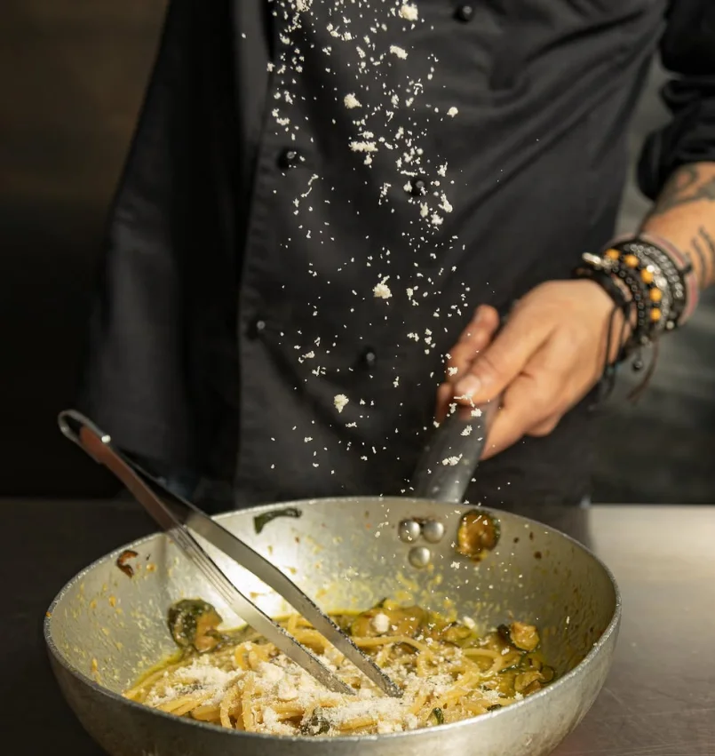
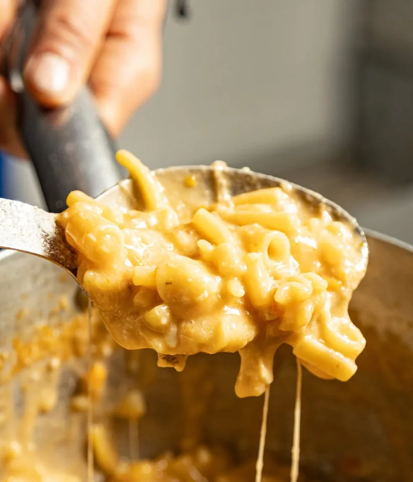
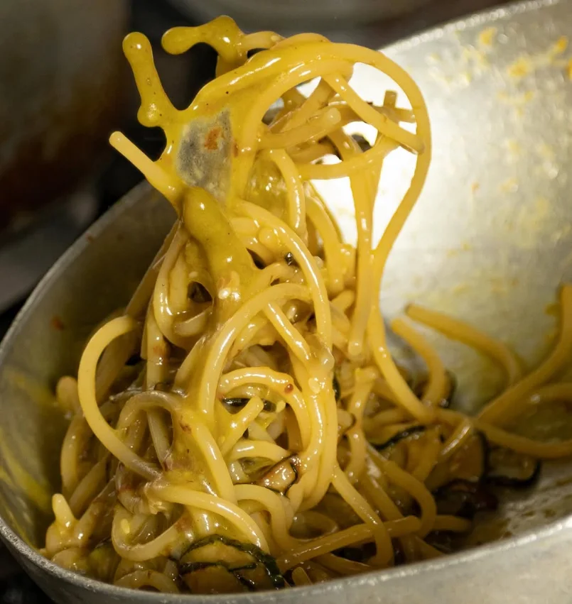

Il più richiesto
Pasta, patate e provola
Mista corta, patate e provola che fila dal mestolo. C'è chi dice sia la più buona mai mangiata.
Un luogo che sa di casa e di tempo ritrovato. Piatti della tradizione napoletana preparati con cura, porzioni generose e una proposta vegana pensata per tutti, non come ripiego.

Foto Instagram dell'osteria (ph. @imma.petricciuoli) · da autorizzare
Pochi piatti, fatti bene, con i tempi della cucina di casa. Questi sono quelli che gli ospiti nominano di più.

Mista corta, patate e provola che fila dal mestolo. C'è chi dice sia la più buona mai mangiata.

Zucchine fritte, basilico e una mantecatura cremosa. Il profumo arriva prima del piatto.
Piatti citati sui profili dell'osteria e nelle recensioni. Menu completo, prezzi e allergeni: da inserire con il titolare.

All'Osteria Ducale chi mangia vegano non sceglie tra due insalate. Ci sono antipasti, primi, secondi e dolci pensati apposta, segnalati in carta, con un personale che sa rispondere alle domande.
Una proposta che lo chef ha raccontato anche in diretta su Canale 21.
Foto Instagram dell'osteria · da autorizzare




Foto pubblicate sul profilo Instagram @osteriaducale · da autorizzare. Da aggiungere: sala, dehors in piazza, cantina e staff.
L'osteria è in Piazza Castello, davanti al Palazzo Castello Ducale di Marigliano: nato in epoca normanna come fortezza a difesa del borgo, poi trasformato nella residenza dei duchi. Un edificio in tufo con quattro torri agli angoli, da cui l'osteria prende il nome.